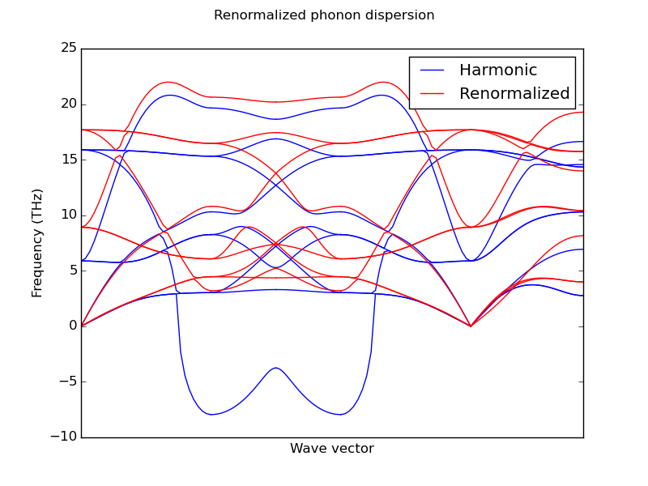

Introduction
Dynaphopy calculates the phonon linewidths and frequency shifts analizing the power spectrum of the velocity projected into the
phonon modes coordinates. As a first step the velocity is be projected into the point in thereciprocal space (wave vector) in which
the harmonic phonon modes are defined.
To calculate this power spectrum dynaphopy can use either Fourier transform, or Maximum Entropy Method(MEM). Fourier transform is a robust method widely used in many fields
of physics to descompose signals into elemental frequencies without information loss. On the other hand, MEM is a very fast method that approximates the whole signal into a much simpler function made by the most representative frequencies. This way it allows to separate the noise from the important data showing smoother spectra that becomes easier to analize. For this reason MEM is highly recomended when working with very long MD and is the default option.
Fourier transform algorith may be used in short MD simulations, or to corroborate the results obtained using MEM. Fourier transform is expected to work better when the number of samples is low, and it will yield better measures of the power spectrum area if the spectra is calculated with high resolution.
Power spectra
The power spectrum calculated by Dynaphopy can be either displayed in a matplotlib X window or stored in a file. All power spectra calculated by DynaPhoPy are by default two sided. The selection of the algorithm used to calculate the power spectra is defined by -psm flag followed by algorithm number.
At the present time there are 2 algorithms available:
- 0: Fourier transform algorithm.
- 1: Maximum Entropy Method algorithm.
$ dynaphopy input_file OUTCAR -psm 1
Fourier methods do not require additional parameters but Maximum Entropy Method (MEM) does. MEM allows to obtain smoother and faster power spectra interpolating the velocity using a polynomia which depends on a certain number of coefficents. The higher this number is, the heavier the calculation becomes and the result becomes closer to Fourier transfom solution. Fortunatelly, usually the convergence of the peaks shape in MEM can be found with 1000-3000 coeficients obtaining a very good performance. By default the number of coefficents used is 1000 but it can be changed using -cf followed by the number of coeficients.
$ dynaphopy input_file OUTCAR -cf 2000
Full power spectra
This options calculate the power spectra directly from cartesian coordinates velocity without peforming any projection. That means that in principle it contains all the phonon frequencies present in the crystal. At infinite time steps and MD cell size limit, this power spectrum tends to the vibrational density of states (VDoS).
Notice that the super cell size limit is practically unreachable. This is not a good method at all to calculate the VDoS. For this purpose is better to interpolate a larger set of q points within the Brillouin zone. Refere to force renormalization section.Plot spectrum in a matplotlib X window:
$ dynaphopy input_file OUTCAR -pdSave spectrum to file:
When this spectrum is requested, the area bellow the curve is also calculated. This area correspond to one half of the total kinetic energy of the phonon within the MD cell. According to the equipartition theorem, at high temperatures this area can be approximated to:$ dynaphopy input_file OUTCAR -sd filename$$ \frac{1}4 N K_bT$$
where N is the number of phonon in the MD cell, Kb the Boltzmann constant and T the temperature.Wave vector projection power spectra
This options request the velocity to be projected into a q point (wave vector) and obtain the power spectrum.
Plot spectrum in a matplotlib X window:
$ dynaphopy input_file OUTCAR -pwSave spectrum to file:
$ dynaphopy input_file OUTCAR -sw filename
Like in the full power spectrum calculation, this option also calculates the area of this spectrum. In this case, since the velocity has been projected, only contains the contribution of the phonon within the defined primitive cell.Phonon modes projection power spectra
This option requests the velocity to be projected into a q point (wave vector) and additionally projected it into each of the harmonic phonon modes defined in this point. This option requieres phonopy to be correctly installed and FORCE_SETS file has to be calculated first. The result is a set of phonon mode projections (one for each phonon) which are either displayed in the screen in different windows or stored in a file (one column for each phonon) sorted from lower to higher frequency.
Plot spectrum in a matplotlib X window:
$ dynaphopy input_file OUTCAR -ppSave spectrum to file:
$ dynaphopy input_file OUTCAR -sp filenameAdditional options
Use -r option to change the power spectrum range and resolution (start, end, number of points).
$ dynaphopy input_file OUTCAR -r 0 25 100Use -q to change the recirpocal space point (wave vector) into which the velocity is projected. This option takes 3 real numbers (wave vector in reduced coordinates).
$ dynaphopy input_file OUTCAR -q 0.5 0 0.5The number of time steps used to calculate the power spectra may have great influence in the final result. Using more time steps will lead to more converged results, however, this will imply a increase of the computational time (specially for Fourier transform method. Additionally, usually the MD simulation will take some time to equilibrate. Those initial time steps cannot be used and must be removed from the calculation. For this purpose DynaPhoPy includes some options to manipulate the input MD data. The main one is -n flag. This flag defines the number of steps used in the calculations starting from the back. In other words, it will take the last N steps of the MD file.
If the OUTCAR file contains less time steps than the especified in -n flag, all time steps will be used.$ dynaphopy input_file OUTCAR -n 5000All these option can be combined to obtain the desired results. In interactive mode these options can also be used as initial parameters that can be changed inside interactive menus. The only exception is -n flag that cannot be changed. For very long MD the amount of RAM memory needed to do the calculations can be huge so the initial discarted time steps are erased from memory at the begining of the execution.
However, it is still necessary to keep the full MD trajectory in memory at the beginning before removing the initial steps. For detailed information about to work with huge MD data refere to special features
Obtaining anharmonic phonon properties
Phonon linewidhts and frequency shifts can be obtained by direct analysis of power spectra. Using phonon modes projections
are the best way to analize the individual phonons since they are completly separated in individual power spectra containing only
one peak. Dynaphopy offers a tool to automatically fit the
obtained spectra to lorentzian functions and display the results on the screen. This tool is called peak analysis and is
requested through flag -pa.
This option works better with MEM method since the obtained sprectra are smoother. In case of Fourier trasform calculations
some smoothing methods may be used before fitting.
$ dynaphopy input_file OUTCAR -pa
When the calculation is finished the individual information of each phonon (sorted from low to high frequency) is displayed on the screen. Position and Width correspond to the anharmonic frequency and linewidth of the corresponding phonon (in this case the 7th phonon) respectively. Frequency shifts are calculated from the diference between the harmonic frequency and calculated anharmonic frequency (Position) of each peak.
Peak # 7
------------------------------------
Width (FWHM): 7.23023622031 THz
Position: 14.5432491526 THz
Area (1/2) (Loretzian): 768.615859207 u * Angstrom^2 / ps^2
Area (1/2) (Total): 635.398869055 u * Angstrom^2 / ps^2
<|dQ/dt|^2>: 3074.46343683 u * Angstrom^2 / ps^2
Occupation number: 4.79786944186
Fit temperature 3697.73074478 K
Maximum height: 67.6763577864 u * Angstrom^2 * 2 pi / ps
Frequency shift: 0.19964818724 THz
Fit Error(RMSD)/Max.: 9.14172647357
Width: Phonon linewidth
Position: Anharmonic phonon frequency
Area: The integration of the power spectrum. This area is equal to one half of the total kinetic energy of each phonon. At high temperature this area should be close to:
$$ \frac{1}4 N K_bT$$
However, due to the anharmonicity, the harmonic eigenvectors may not describe correctly the anharmonic phonons and this value may change. This value is calculated fromt he obtained power spectrum (tot) and from the interpolated Lorentzian curve (Lorenzian). As long as the phonon quasi particles approximation is correct, the area obtained from Loretzian curve should be more trustfull. Using MEM method, both areas tend to be equal. However, in the Fourier Transform method, due to the noise these values may differ. For this reason, visual analysis is strongly recommended to ensure a good fitting.<|dQ/dt|^2>: Time derivative of the phonon coordinate. Within the harmonic approximation, this value is equal to the double of the kinetic energy and equal to the total energy.
$$ \left\langle E \right\rangle = \left\langle K \right\rangle + \left\langle V \right\rangle = 2 \cdot \left\langle K \right\rangle = \left\langle {{{\left| {\dot Q} \right|}^2}} \right\rangle = {K_b}T $$
From this equation temperature can be isolated. This value is shown in Fit Temperature.Occupation number: Calculated from Bose-Einstein distribution.
$$n = \frac{{\left\langle E \right\rangle }}{{\hbar \omega }} - \frac{1}{2}$$
where n is the occupation number and ω is the phonon frequency (Position).
Frequency shift: Difference between anharmonic frequency (Position) and harmonic frequency.
Fit Error(RMSD)/Max.: Fitting error of the Lorentzian curve with the power spectrum divided by the peak height. RMSD is given by the square root of the trace of the covariance matrix.
$$ RMSD = \sqrt {tr\left( {{\mathop{\rm cov}} } \right)} $$
This is another good method to know how good is the phonon decomposition technique approximation for the studied system. For MEM method it is expected to be very low (<1E-5). In the case of Fourier transform method can depend very much on the noise and the temperature so can only be used as relative reference between peaks.
Using fitdata script, these noisy spectra can be smoothed and a similar low fitting error can be obtained (refere to Advanced features section).
When the calculation is finished, for each peak a matplotlib X window apear in the screen showing the result of the fitting for visual analysis. This is very convenient for visual analysis of short MD trajectories, but when the calculations are long, specially using Fourier transform, and the calculations are done in cluster computers, xwindows cannot be displayed and the calculation may crash.
In this case flag --silent may be used. Using this flag only the text data is shown in the screen and the phonon information wich can be stored redirecting the output to a file.
$ dynaphopy input_file OUTCAR -pa --silent > output.log
Atomic displacements calculation
DynaPhoPy allows to calculate the atomic displacements from the MD trajectory respect to a desired direction.
The calculation of the atomic displacements requires (obviously) the previous load of the trajectory coordinates
information. In previous versions of DynaPhoPy, this trajectory was not stored in the hdf5 files, so if you load
the MD information from a hdf5 file, please make sure that contains also the trajectory coordinates. If not, you
can use the lastest version of DynaPhoPy to extract the information from the OUTCAR file. The same can be applied
for the use of concath5 script.
DynaPhoPy will still be compatible with hdf5 files which does not contain the trajectory and concath5
is able to create hdf5 files which contains only the velocity information using --velocity_only flag in
order to reduce HD space.
To request a atomic displacements calculation flags -pad and -sad are used,
pad will calculate the displacements and show the data in a matplolib plot:
$ dynaphopy input_file OUTCAR -pad 0 0 1
this flag requires a set of three float numbers that compose the vector that indicates the direction into which
the atomic displacements will be analyzed.
On the other hand, -sad flag does the same calculation as -pad but instead of
showing the plot on the screen stores the information in a defined file:
$ dynaphopy input_file OUTCAR -sad 0 0 1 displacements_file.out
The file contains a column for each nonequivalent atom in the unit cell. The first column correspond to the displacement coordinate.
Obtaining the renormalized forces
The phonon information that can be obtained from MD is limited to the size of the simulation cell.
DynaPhoPy can only extract the information on the commensurate points so in order to obtain a good sampling
of the Brillouin zone to calculate crystal macroscopical properties it is necessary to resort to interpolation methods.
Phonopy now can renormalize the force constants from a set of renormalized frequencies in the commensurate points.
DynaPhoPy interfaces with phonopy to provide a new set of renormalized frequencies extracted from MD for all commensurate points and obtain the renormalized force constants from phonopy using -sfc flag.
$ dynaphopy input_file TRAJECTORY --sfc FORCE_CONSTANTS
These force constants are written in a FORCE_CONSTANTS file that can be used in phonopy instead of the FORCE_SETS file by --readfc flag.
$ phonopy --readfc FORCE_CONSTANTS
Using this new force constants it is possible to calculate all the properties available in phonopy using a set of renormalized forces obtained at finite temperature. One of the most intersting applications is the renormalization of imaginary frequencies in materials that are stable at high temperatures but inestable at 0 K.
Phonon dispersion bands of cubic zirconia (ZrO2) renormalized at 1000 K